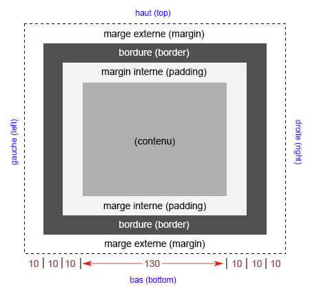
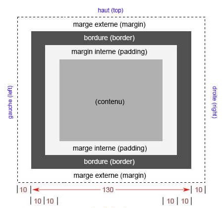
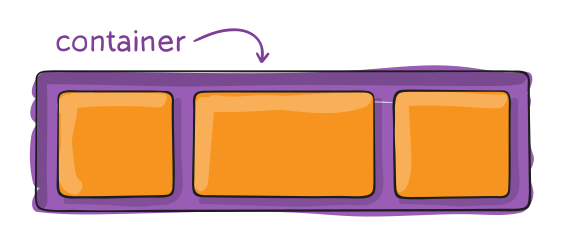
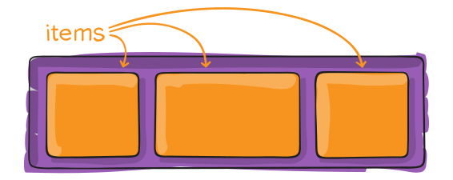
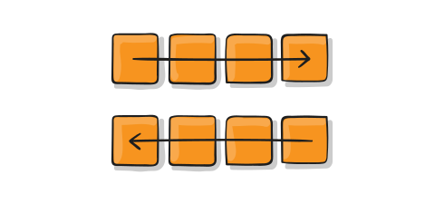
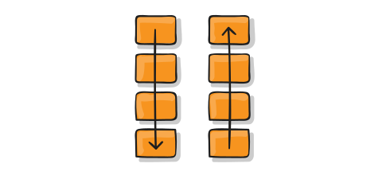
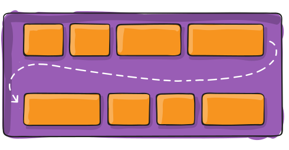
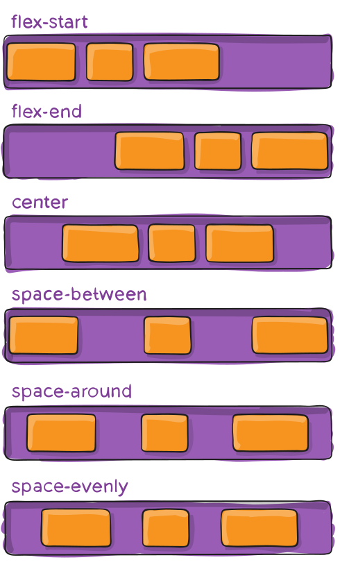

Rappels : HTML, CSS et modèle de boîte CSS
Imbrications HTML: Ancêtres, Parents, Enfants, Descendants, Frères
Chaque document HTML est composé de conteneurs qui peuvent être ancêtres, parents, enfants, descendants ou frères. Ces éléments forment une hiérarchie d'imbrications.
Le modèle de boîte CSS
1. Tout est boîte
Tout élément est rendu comme une boîte. Chaque boîte possède :
- contenu (texte, image, enfant)
- padding (marge intérieure)
- border (bordure)
- margin (marge extérieure)
See the Pen c05-modele_de_boite by Frédéric Lacroix (@frlacroix) on CodePen.
2. Dimensions calculées
Valeur par défaut:
box-sizing: content-box;
content-box

La largeur totale d'une boîte se calcule ainsi width + padding + border + margin.
border-box

La largeur totale d'une boîte se calcule ainsi width + margin.
L’utilisation de border-box est recommandée, car la valeur déclarée dans width inclut déjà le padding et la bordure. Cela simplifie grandement le calcul de la largeur d’une boîte. Nous prendrons donc l’habitude d’activer ce comportement dès l’initialisation de nos feuilles de style.
/* RÉINITIALISATION */
* {
margin: 0;
padding: 0;
box-sizing: border-box;
}
3. Plusieurs types de boîte
- Bloc (
display: block) :
occupe toute la largeur, commence sur une nouvelle ligne (<div>,<p>,<h1>…). - En ligne (
display: inline) :
s’écoule dans le texte sans forcer de retour à la ligne (<span>,<a>,<strong>…). - Autres types spécifiques :
list-itempour<li>tablepour<table>flexougriduniquement si activé via CSS.
4. Conséquence
Comprendre le modèle de boîte, c’est à la fois :
- savoir additionner marges, bordures et paddings,
- savoir quel est le comportement de placement implicite dicté par
display.
Le sélecteur de classe
Le sélecteur de classe permet de cibler un élément ou un bloc d'éléments sans passer par la hiérarchie de la structure des éléments HTML.
HTML
<p class="note">balise avec une classe<⧸p>
<p class="note important">une balise peut avoir plusieurs classes<⧸p>
CSS
.note {
color: red;
}
Dans l'exemple qui suit, la classe note permet de cibler le troisième paragraphe à l'aide du sélecteur .note, passant ainsi outre à la hiérarchie HTML.
Exemple
See the Pen c06-selecteur_classe01 by Frédéric Lacroix (@frlacroix) on CodePen.
En CSS, le sélecteur de classe débute toujours par un point. La classe de l'exemple précédent est donc ciblée par le sélecteur .note dans la feuille de style.
Utiliser Google Fonts
Google Fonts est un service gratuit de Google qui propose une vaste bibliothèque de polices de caractères libres et open source
Utiliser Google Fonts pour intégrer des polices de caratères différentes dans vos pages web.
See the Pen c06-google-fonts by Frédéric Lacroix (@frlacroix) on CodePen.
Le modèle de boîte flexible (Flexbox) : une intro
Source: CSS Flexbox Layout Guide
Flexbox facilite la mise en page à une dimension : organiser des éléments en ligne (axe horizontal ) ou en colonne (axe vertical ) avec un contrôle sur leur taille, alignement et répartition de l’espace.
flex-container et flex-item
La structure de base de flexbox repose sur :
- un conteneur parent (
flex-container) qui génère le contexte d'affichage pour ses enfants directs : les flex‑item;
Source: CSS Flexbox Layout Guide
- des enfants (
flex-item) qui sont les enfants directs du flex‑container.
Source: CSS Flexbox Layout Guide
Activation
N'importe quel élément HTML devient un conteneur lorsqu'il est assigné à la propriété display:flex. Tous ces enfants deviennent automatiquement des flex items.
Par exemple, utilisons une liste (<ul>) en tant que flex-container et
des éléments de liste (<li>) en tant que flex-item:
Code
<ul>
<li>Clou</li>
<li>Vis</li>
<li>Écrou</li>
<li>Boulon</li>
<li>Oeillet</li>
</ul>
See the Pen c08_intro-flexbox-00 by Frédéric Lacroix (@frlacroix) on CodePen.
Les propriétés pour le parent (conteneur)
Source: CSS Flexbox Layout Guide
display:flex: convertit le conteneur en boîte flexible et ses enfants directs en flex-item.flex-direction: définit la direction des flex-item.
row
(rangée / sur l'axe horizontal )

Syntaxe
flex-direction: row | row-reverse;column
(colonne / sur l'axe vertical )

Syntaxe
flex-direction: column | column-reverse;Source: CSS Flexbox Layout Guide
flex-wrap:- permet (
wrap) le retour à la ligne - ou empêche (
nowrap) le retour à la ligne des flex-item.

Source: CSS Flexbox Layout Guide
Syntaxe
flex-wrap: nowrap | wrap | wrap-reverse;- permet (
justify-content: appliquée sur le flex-container, cette propriété gère l'espace autour des flex-item.

Source: CSS Flexbox Layout Guide
Syntaxe
justify-content: flex-start | flex-end | center | space-between | space-around | space-evenly;
flex-direction:row et justify-content
justify-content gère l'alignement le long de l'axe principal qui est, dans ce cas-ci, l'axe horizontal .
See the Pen c08_intro-flexbox-01 by Frédéric Lacroix (@frlacroix) on CodePen.
flex-direction:column et justify-content
justify-content gère l'alignement le long de l'axe principal qui est, dans ce cas-ci, l'axe vertical .
See the Pen c08_intro-flexbox-02 by Frédéric Lacroix (@frlacroix) on CodePen.
flex-direction:row et align-items
align-items gère l'alignement le long de l'axe secondaire qui est, dans ce cas-ci, l'axe vertical .
See the Pen c08_intro-flexbox-03 by Frédéric Lacroix (@frlacroix) on CodePen.
flex-direction:column et align-items
align-items gère l'alignement le long de l'axe secondaire qui est, dans ce cas-ci, l'axe horizontal .
See the Pen c08_intro-flexbox-04 by Frédéric Lacroix (@frlacroix) on CodePen.
Exemple simple d'application des boites flexibles (flexbox) pour une liste de liens de navigation
Exemple
See the Pen c06_exemple-menu-flexbox by Frédéric Lacroix (@frlacroix) on CodePen.
Votre lecture se termine ici.
Avant le prochain cours, assurez-vous d’avoir:
- réalisé les travaux formatifs;
- visionné les vidéos;
- expérimenté et sauvegardé les pens dans votre compte Codepen;
- noté les questions qui vous sont venues pendant votre lecture.